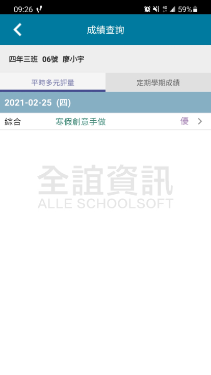
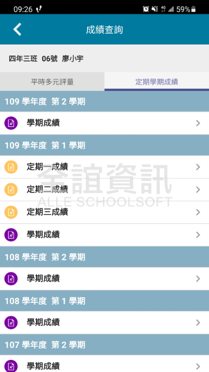
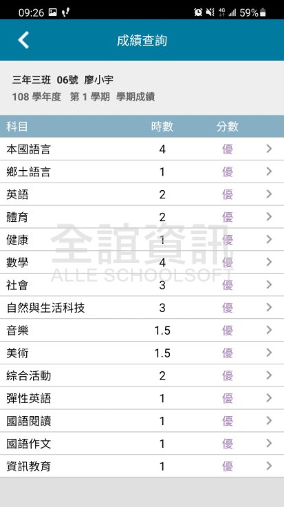
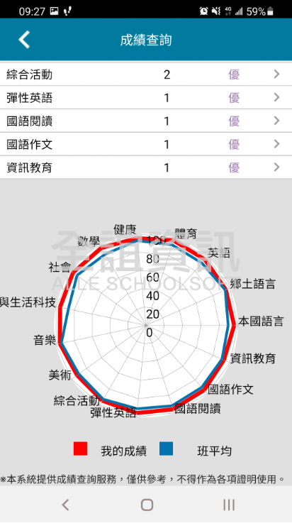

<div class="APP_application_list_class">
    <div class="APP_application_list_title">
      <span class="APP_application_list_title_left">
        <h4>成績查詢</h4>  
      </span>
      <span class="APP_application_list_title_right">
        <span class="APP_list_user APP_user_orange">
          學生
        </span>
        <span class="APP_list_user APP_user_green">
          老師
        </span>
        <span class="APP_list_user APP_user_red">
          家長
        </span>
      </span>
      <div class="clear"></div>
    </div>
  
    <div class="APP_application_list_words">
        整理學生各學期成績與平時多元評量成績，讓老師與家長方便一覽孩子的各科表現狀況。
    </div>
  
    <div class="APP_application_list_pic">
      <span class="APP_list_pic_margin">
        
      </span>
      <span class="APP_list_pic_margin">
        
      </span>
      <span class="APP_list_pic_margin">
        
      </span>
      <span class="APP_list_pic_margin">
        
      </span>
    </div>
  </div>